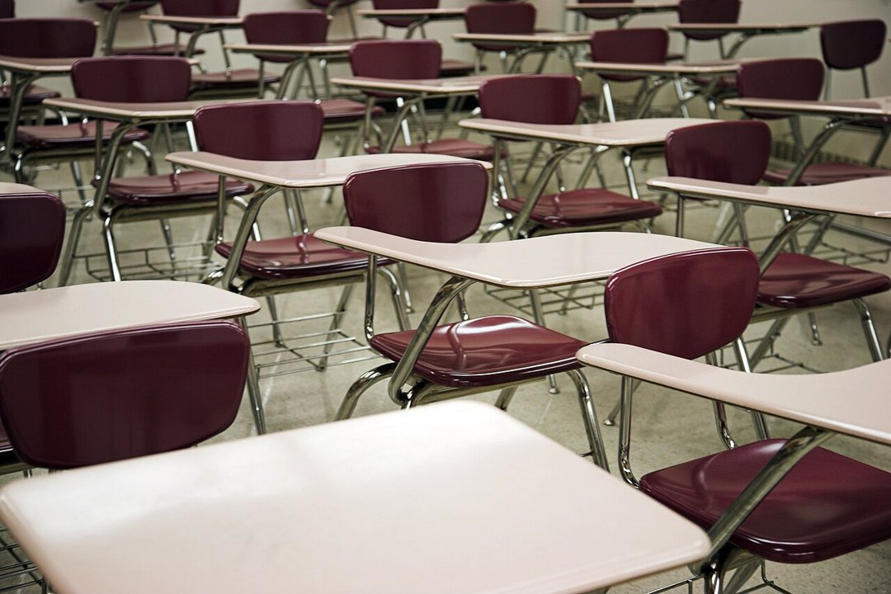

📷 사진 1 자리

▲ 시험을 마친 빈 교실 책상 · 사진: dcJohn from Live in DC, Work in Baltimor / CC BY 2.0 / 위키미디어 공용
오늘(19일) 2027학년도 수능이 끝나면 수험생에게 남는 건 날짜 몇 개예요. 오늘 보는 정답은 아직 확정본이 아니고, 문제에 이의가 있으면 다음 주 월요일까지만 말할 수 있어요. 성적표는 3주 뒤에 나와요.
오늘 정답은 확정일까
시험이 끝나도 문제와 정답이 곧바로 올라오지는 않아요. 한국교육과정평가원 수능 누리집에 자료가 올라온 뒤에 확인할 수 있어요.
이때 보는 정답은 이의신청 심사 전 정답이에요. 가채점은 이 정답으로 해도 되지만, 최종 결과는 12월 1일에 확정돼요.
가채점표에 적어 온 답을 오늘 밤 원점수로 옮겨 두세요. 수시 최저학력기준 충족 여부와 정시 지원 전략을 짤 때 성적표가 나오기 전까지 기댈 숫자는 이것뿐이에요.
이의신청 기간과 방법
문제나 정답에 이상이 있다고 생각하면 평가원 누리집의 이의신청 전용 게시판에 글을 올리면 돼요. 평가원 시행세부계획에 따르면 접수는 오늘부터 23일(월)까지예요.
| 일정 | 날짜 |
|---|---|
| 이의신청 접수 | 11월 19일(목)~23일(월) |
| 정답 확정 발표 | 12월 1일(화) 오후 5시 |
| 성적 통지 | 12월 11일(금) |
접수된 의견은 심사를 거쳐 12월 1일 오후 5시 최종 정답 발표 때 결과가 함께 나와요. 그 전까지 가채점 점수는 '잠정'으로 보는 게 맞아요.
성적표는 언제, 어디서
성적은 12월 11일(금)에 수험생에게 통지돼요. 성적통지표는 보통 원서를 낸 곳에서 나눠 주니 재학생은 학교, 졸업생은 원서 접수처 안내를 미리 봐 두세요.
12월 1일 정답 확정 뒤 성적 통지까지는 열흘이에요. 그 사이에 잡힌 대학별 일정이 있다면 가채점 점수를 보고 먼저 판단해야 해요.
올해 수능은 AI 부정행위 대책이 하루 전까지 추가될 만큼 시험장 관리가 화제였어요. 김문희 평가원장은 시험이 끝난 뒤에도 부정행위 의심 정황이 확인되면 적극 협조하겠다고 밝혔어요. 성적 통지 전후로 부정행위 관련 발표가 따로 나올 수 있다는 얘기라서, 평가원 공지는 12월 11일까지 한 번씩 열어 보는 편이 좋아요.
다음 날짜는 23일 이의신청 마감, 그다음은 12월 1일 오후 5시 정답 확정이에요.
함께 보면 좋은 이슈